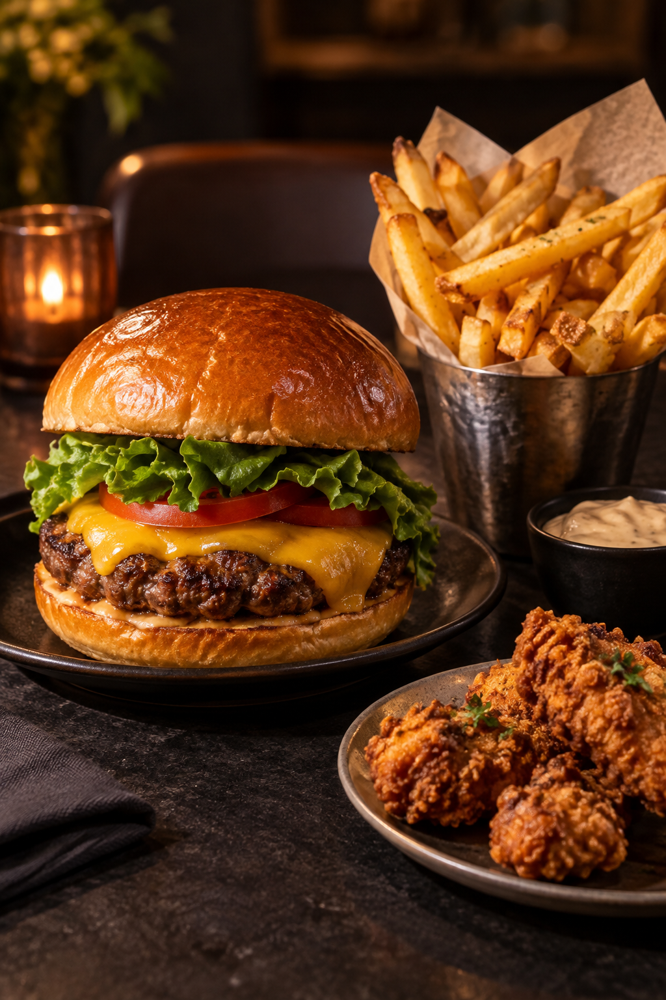

Maison Braise est un établissement fictif imaginé pour tester un site de restaurant complet. Son univers associe une carte courte, des recettes gourmandes et un accueil simple.
Dans ce scénario, une petite équipe prépare les commandes au déjeuner et au dîner. Les informations, plats et services ci-dessous sont des données de démonstration.
Scénario créé autour d’une ouverture en 2021, de 28 places et de repas sur place ou à emporter.
